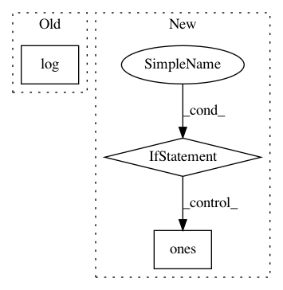

d29d0c240d88c351e5b8b0e81d76c5ef2be2bd9b,functions/ZonalRemap.py,ZonalRemap,updatePixels,#ZonalRemap#Any#Any#Any#,165
Before Change
where=self.whereClause,
extent=props["extent"],
sr=props["spatialReference"])
self.trace.log("Trace|ZonalRemap.updatePixels|ZoneID:{0}|ZT-Map{1}|\n".format(
str(zoneIds), str(self.ztMap)))
// output pixels initialized to background color
p = np.full(v.shape, self.background, dtype=props["pixelType"])
After Change
continue
for t in T:
I = (z == k) if z is not None else np.ones(v.shape, dtype=bool)
if t[0] and t[1]: // min and max are both available
I = I & (v > t[0]) & (v < t[1])
elif t[0]:
In pattern: SUPERPATTERN
Frequency: 3
Non-data size: 3
Instances
Project Name: Esri/raster-functions
Commit Name: d29d0c240d88c351e5b8b0e81d76c5ef2be2bd9b
Time: 2016-02-05
Author: akferoz@esri.com
File Name: functions/ZonalRemap.py
Class Name: ZonalRemap
Method Name: updatePixels
Project Name: epfl-lts2/pygsp
Commit Name: 704174e94846fecfb5162c56d3305057fc4ba734
Time: 2015-09-07
Author: lionel.martin@epfl.ch
File Name: pygsp/graphs/community.py
Class Name: Community
Method Name: __init__
Project Name: adalca/neuron
Commit Name: a6a499ba2f5559a511914e24b34a93c8095ecc40
Time: 2017-03-20
Author: adalca@mit.edu
File Name: src/pytools/metrics.py
Class Name: Dice
Method Name: __init__